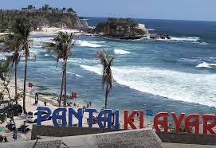

Pantai Klayar
march 25, 2020Views : 1,267,872Pantai ini memiliki pasir putih yang bersih, batu karang raksasa laksana Sphinx serta air mancur yang keluar dari celah-celah bebatuan dan menghasilkan suara seperti seruling (seruling samudra).
Watch This
Goa Gong
march 25, 2020Views : 787,497Goa Gong merupakan salah satu tempat wisata di Pacitan yang memiliki keindahan alam yang sangat menakjubkan. Keindahan Goa Gong terletak pada Staglatit dan Stalagmit yang begitu indah terbentuk secara alami di langit-langit dan dasar goa.
Watch This
Pemandian Banyu Anget
march 25, 2020Views : 563,775Pemandian Air Hangat Tirto Husodo atau yang sering di sebut Banyu Anget (dalam bahasa jawa) memiliki keindahan alam yang cukup menarik. Bukit dan gunung yang ada di sekitar kolam renang akan menambah suasana sejuk , nyaman dan sejenak menghilangkan penat yang ada dalam pikiran kita.
Watch This